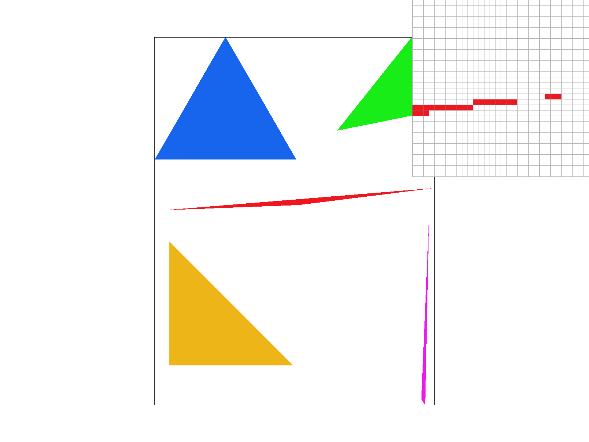
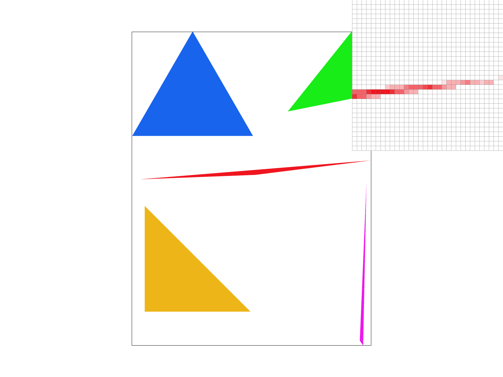
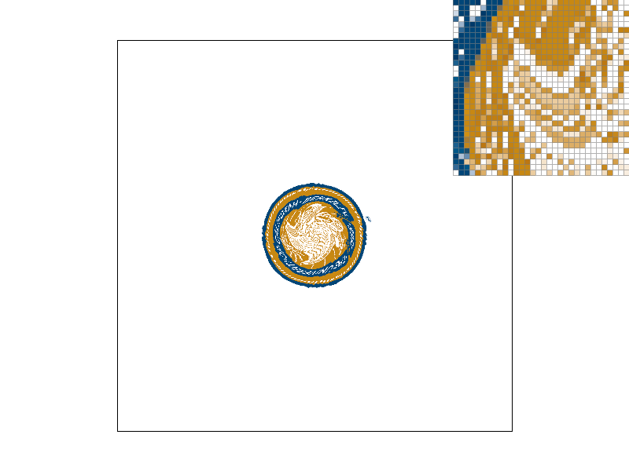
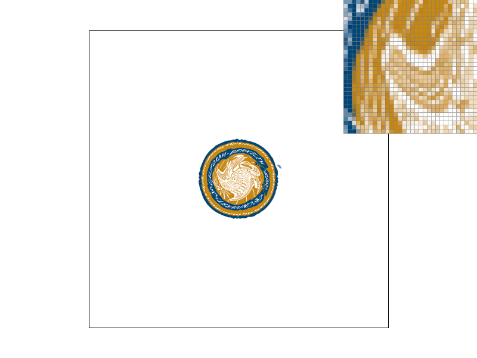

CS184/284A Spring 2025 Homework 1 Write-Up
Gurvir Kooner and Daniel Hodde
Link to webpage: hodde.dev/hw1
Link to GitHub repository: DanielHodde.github.io

Overview
In this homework, we implemented a basic rasterizer capable of rendering vector graphics by drawing triangles, applying supersampling for antialiasing, performing geometric transformations, and using barycentric interpolation for smooth shading. We also extended this to include support for texture mapping, including improved quality through mipmaps with level sampling.Task 1: Drawing Single-Color Triangles
In order to rasterize a triangle we first calculated the min and max x and y coordinates to be able to construct a bounding box around the triangle. Once we have this bounding box we search over this range of pixels and determine if they lie within our triangle. In this way we limit our search space to the bounding box of the triangle. To determine if a pixel is in a triangle we take each edge of the triangle dot product of the normal vector of the edge with a vector to the pixel we are testing. The result of this dot product can be used to determine which side of the edge the pixel lies on, and if the pixel is on the same side of each edge of the triangle it is determined to be enclosed in the triangle and we will subsequently fill it. In other words if all three dot products are greater than or equal to zero or less than or equal to zero then the pixel is enclosed in the triangle regardless of winding order.Task 2: Antialiasing by Supersampling
We implemented supersampling in therasterize_triangle function by subdividing each pixel into multiple sample points, and then store
them in the sample_buffer array as well as average them in resolve_to_framebuffer. In order to account for the increased size of adding subdivisions we multiplied the sample_buffer size
by the number of subdivisions. This number is determined by the sample rate, and around each pixel a square of size sqrt(sample_rate) x sqrt(sample_rate) is
created and each subpixel within this is checked using the line tests to determine if it falls in the triangle. Finally the resolve_to_framebuffer
function averages the subpixel values to determine the final color that is produced at each pixel.
Supersampling helps to antialias our triangles by taking more samples within each pixel and averaging their colors to create smoother transitions between edges. In this way we can eliminate some of the jagged edges for a cleaner output.
|

|
|
|

|
|
Task 3: Transforms
We attempted to make cubeman appear as if he was running by applying rotations to his extremeties to imply movement. These rotations displaced the limbs so we also adjusted the translations to keep the limbs roughly attached, however we did not adjust the scale of cubeman. As a final touch we adjusted cubemans colors to make him seem more humanlike and as if he was wearing clothes.Task 4: Barycentric coordinates
Barycentric coordinates define a point's position as a weighted combination of the triangle's vertices compared to a global coordinate system. We can then use the weights of each of the vertices to get the weighted average of the color to determine what the color of a pixel should be bounded by our triangle.
Task 5: "Pixel sampling" for texture mapping
Pixel involves trying to map a texture on to the screen. When we are sampling we want to determine the texture coordinates, u and v, which are determined via barycentric coordinates. We then can use either nearest neighbors pixel sampling or bilinear sampling. With nearest neighbor sampling we are trying to find the closest texel to the texture coordinates passed in which makes it really efficient but not necessarily perfect. Bilinear interpolation on the other hand takes the four nearest texels and takes a weighted average to determine the impact each texel has on the final color. This creates a smoother final image, however it has an increased computational cost.|

|

|
|
|

|
Task 6: "Level Sampling" with mipmaps for texture mapping
Our mipmap level stores precomputed, lower resolution versions of the texture that improved the efficiency with rendering and reduces aliasing. When level sampling, we select the appropriate mipmap level depending on the resolution. We use theget_level function in texture.cpp to determine the level of detail depending on the texture coordinates near our desired coordinates. Our
sample function determines the texture color combining pixel and level sampling. L_ZERO samples from the base level, which gives the sharpest details but also has more aliasing risk. L_NEAREST chooses
the closest level, which balances efficiency and reduces aliasing. L_LINEAR takes the two nearest levels and interpolates between them. This provides a smoother transition but takes more computation time.
L_LINEAR has the least speed and most memory usage but has the highest antialiasing power. L_NEAREST has the second best speed, memory usage, and antialiasing power. Finally, L_ZERO is the most efficient but
has the least antialiasing power.